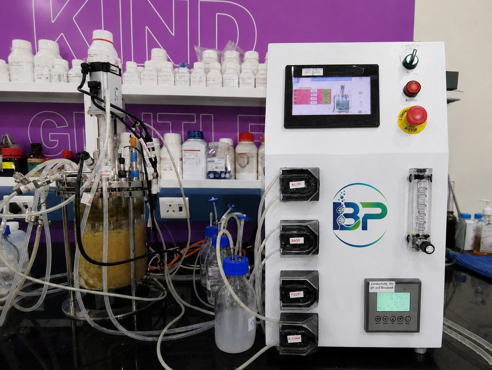

Lab Scale Glass Fermenter
Bioprim-A Series
Advanced lab scale fermenters & bioreactors designed for research applications, engineered for precision, sterility, and process efficiency.

Specifications
- Capacity range2L – 10L
- Contact partsSS316L + Borosilicate Glass
- Non-contact partsSS304
- ConfigurationsStandalone, Twin & Parallel
- Automation optionsBasic, Semi-Automatic, Fully Automatic
Controls
Automatic Temperature Control
Maintains precise thermal conditions for consistent fermentation performance.
Automatic Agitation Control
Configurable mixing for uniform mass transfer and culture health.
Automatic pH Control
Closed-loop acid/base dosing to hold set-point through the batch.
Automatic DO Control
Dissolved oxygen regulation via agitation/aeration cascade.
Nutrient Feeding
Automated feed pump dosing for fed-batch process strategies.
Ready to configure your Bioprim-A system?
Tell us your capacity, automation level, and application — our engineers will help you spec the right configuration.